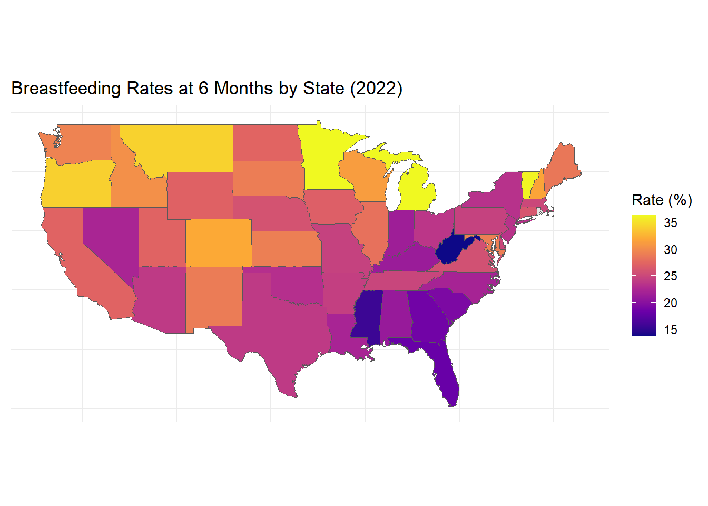

Code
read.csv("C:/Users/betsy/OneDrive/Desktop/Master's Degree/BSBC Data.csv") State BF.at.6.months..2022 mPINC..2022 BF.at.6.months.2020
1 Alabama 21.0 76 20.4
2 Alaska 30.9 82 35.3
3 Arizona 24.0 78 24.6
4 Arkansas 24.4 75 19.4
5 California 27.3 87 28.2
6 Colorado 32.1 85 34.1
7 Connecticut 26.3 87 25.7
8 Delaware 25.0 84 23.6
9 Florida 18.2 81 19.9
10 Georgia 18.7 75 22.1
11 Hawaii 27.7 75 30.6
12 Idaho 30.4 77 24.6
13 Illinois 28.3 82 23.9
14 Indiana 21.5 83 21.1
15 Iowa 27.0 75 24.8
16 Kansas 29.2 83 31.6
17 Kentucky 21.2 73 23.0
18 Louisiana 22.2 81 21.8
19 Maine 28.7 86 28.1
20 Maryland 29.2 83 29.4
21 Massachusetts 25.1 85 23.9
22 Michigan 36.5 78 25.8
23 Minnesota 36.5 81 38.7
24 Mississippi 15.6 83 18.1
25 Missouri 24.6 79 23.4
26 Montana 34.3 81 31.1
27 Nebraska 26.0 73 32.6
28 Nevada 22.3 72 21.7
29 New Hampshire 31.8 90 36.7
30 New Jersey 23.5 82 27.7
31 New Mexico 29.0 82 26.6
32 New York 23.4 83 25.8
33 North Carolina 22.1 84 23.3
34 North Dakota 27.4 77 29.1
35 Ohio 23.7 84 21.6
36 Oklahoma 23.2 79 23.7
37 Oregon 34.2 87 35.6
38 Pennsylvania 24.6 80 25.9
39 South Carolina 19.3 82 25.6
40 South Dakota 29.1 77 32.1
41 Tennessee 24.9 70 27.2
42 Texas 24.0 79 23.9
43 Utah 27.3 77 26.3
44 Vermont 36.2 85 36.8
45 Virginia 25.8 82 30.4
46 Washington 29.5 85 28.9
47 West Virginia 13.8 80 20.9
48 Wisconsin 31.3 80 28.1
49 Wyoming 27.2 75 31.8
mPINC.at.2020 BF.at.6.months.2018 mPINC.2018 Region BF.2018
1 78 20.6 78 Mid-Atlantic 24.43333
2 83 42.1 83 MountainPlains 28.87500
3 77 26.3 77 Midwest 27.68571
4 69 20.4 69 Northeast 29.50000
5 86 26.3 86 Southeast 21.52500
6 85 22.4 85 Southwest 24.00000
7 85 23.6 85 Western 30.42857
8 83 23.6 83 NA
9 81 21.3 81 NA
10 73 22.1 73 NA
11 68 32.9 68 NA
12 75 28.4 75 NA
13 80 19.5 80 NA
14 78 31.7 78 NA
15 72 29.5 72 NA
16 79 26.1 79 NA
17 68 21.1 68 NA
18 75 20.2 75 NA
19 73 34.1 85 NA
20 79 26.2 79 NA
21 86 26.6 86 NA
22 77 23.9 77 NA
23 82 37.2 82 NA
24 73 13.0 73 NA
25 75 31.3 75 NA
26 86 35.7 86 NA
27 71 25.4 71 NA
28 77 20.8 77 NA
29 90 30.2 90 NA
30 80 24.4 80 NA
31 82 27.6 82 NA
32 82 21.4 82 NA
33 77 27.0 77 NA
34 73 29.1 73 NA
35 78 23.7 78 NA
36 75 21.6 75 NA
37 85 33.4 85 NA
38 78 25.6 78 NA
39 77 24.4 77 NA
40 73 32.2 73 NA
41 72 22.7 72 NA
42 77 24.1 77 NA
43 73 27.8 73 NA
44 82 38.0 82 NA
45 81 26.6 81 NA
46 86 29.1 85 NA
47 76 20.2 76 NA
48 80 28.3 80 NA
49 76 28.8 76 NA
BF.2020 BF.2022
1 26.31667 23.65000
2 30.72500 28.73750
3 26.28571 29.25714
4 28.98333 28.58333
5 22.45000 20.12500
6 23.75714 24.87143
7 29.27143 28.90000
8 NA NA
9 NA NA
10 NA NA
11 NA NA
12 NA NA
13 NA NA
14 NA NA
15 NA NA
16 NA NA
17 NA NA
18 NA NA
19 NA NA
20 NA NA
21 NA NA
22 NA NA
23 NA NA
24 NA NA
25 NA NA
26 NA NA
27 NA NA
28 NA NA
29 NA NA
30 NA NA
31 NA NA
32 NA NA
33 NA NA
34 NA NA
35 NA NA
36 NA NA
37 NA NA
38 NA NA
39 NA NA
40 NA NA
41 NA NA
42 NA NA
43 NA NA
44 NA NA
45 NA NA
46 NA NA
47 NA NA
48 NA NA
49 NA NACode
# Load necessary libraries
library(ggplot2)
library(sf)
library(dplyr)
library(maps)
# Example breastfeeding data
breastfeeding_data <- read.csv("C:/Users/betsy/OneDrive/Desktop/Master's Degree/BSBC Data.csv")
# Get US states map data
us_states <- st_as_sf(map("state", plot = FALSE, fill = TRUE))
# Correct state names to match the map data (lowercase and no spaces)
breastfeeding_data$State <- tolower(breastfeeding_data$State)
# Merge the breastfeeding data with the spatial data
merged_data <- us_states %>%
mutate(State = tolower(ID)) %>%
left_join(breastfeeding_data, by = c("State" = "State"))
# Plot the heat map
ggplot(merged_data) +
geom_sf(aes(fill = BF.at.6.months..2022)) +
scale_fill_viridis_c(option = "plasma", na.value = "grey90") +
labs(title = "Breastfeeding Rates at 6 Months by State (2022)",
fill = "Rate (%)") +
theme_minimal() +
theme(axis.text = element_blank(), axis.ticks = element_blank())